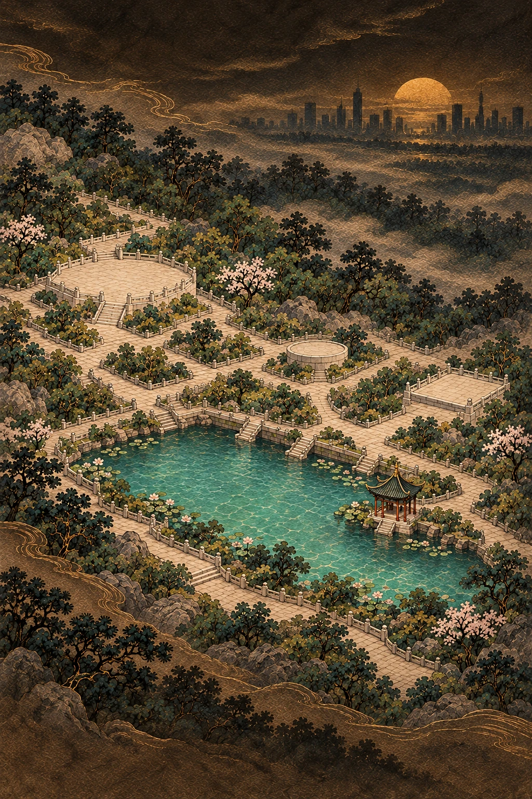
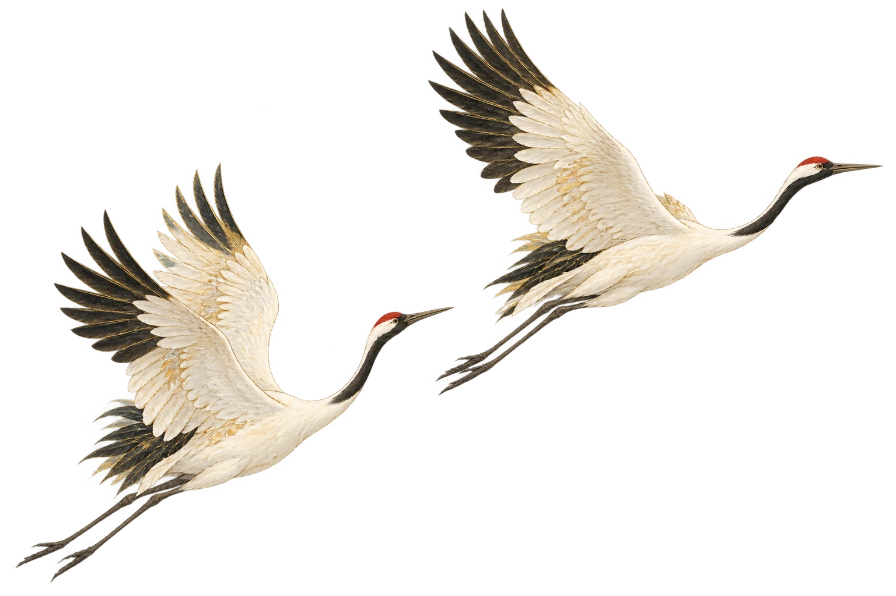
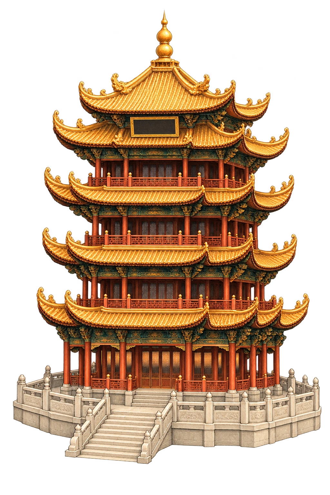
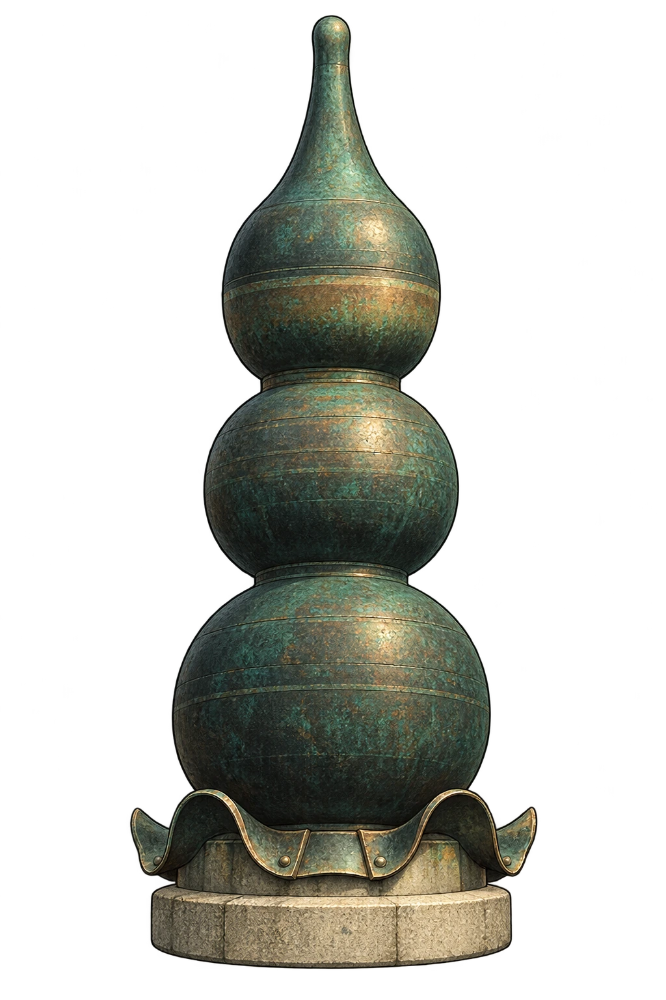
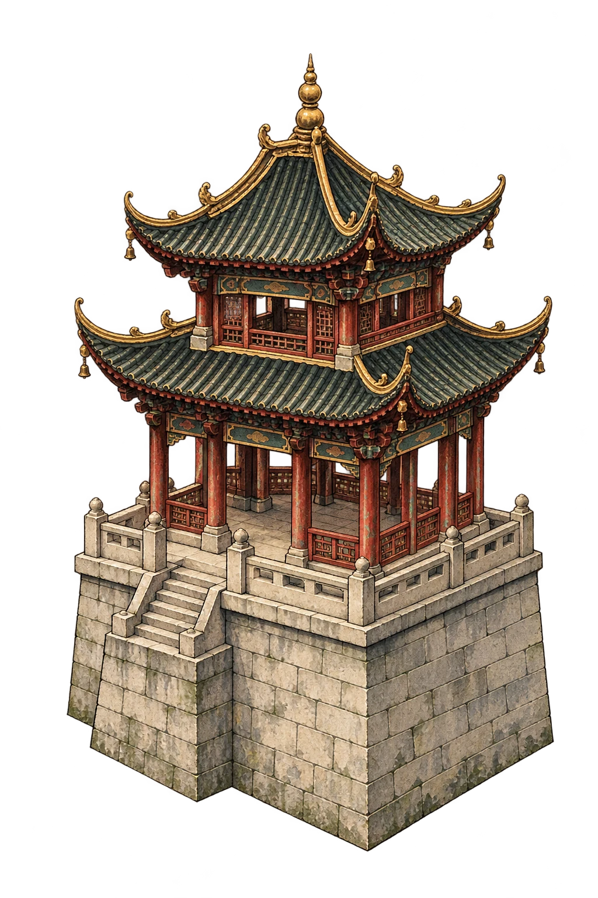

眼前这座楼
抬头看看飞檐，再读一段楼的故事。
本地动画样板。可直接选择景物。
请启用 JavaScript 以切换景物和缩放。图片仅为布局示意，不可用于实地导航。
慢一点，发现一处细节
画中细节经过艺术处理。现场展陈和通行请以景区为准。
每一处，都留有来路
画卷参考景区的相对布局：主楼在西，白云阁在东，鹅池在南。建筑被放大，石路经过简化，远景城市是艺术装饰。
当前为独立本地动画样板。插画由 AI 辅助绘制，尚未现场校准，不提供实地路线、实时定位或到访认证。问答为固定内容，没有调用模型或语音服务。
这幅画里，你看过
仅保存在这台设备。不代表实际到访，也不会上传你的行踪。
一笔金线，一层山色
画卷暂未展开。请刷新页面重试，或先查看景物资料。
将画卷，再展开一点
西部主楼区
沿画卷向东看看，那里还有阁楼、园林与碑刻。
核心园区构图草图 · 空心点为待补绘的资料参考位置，首义园区东延部分待补。非实地导航。